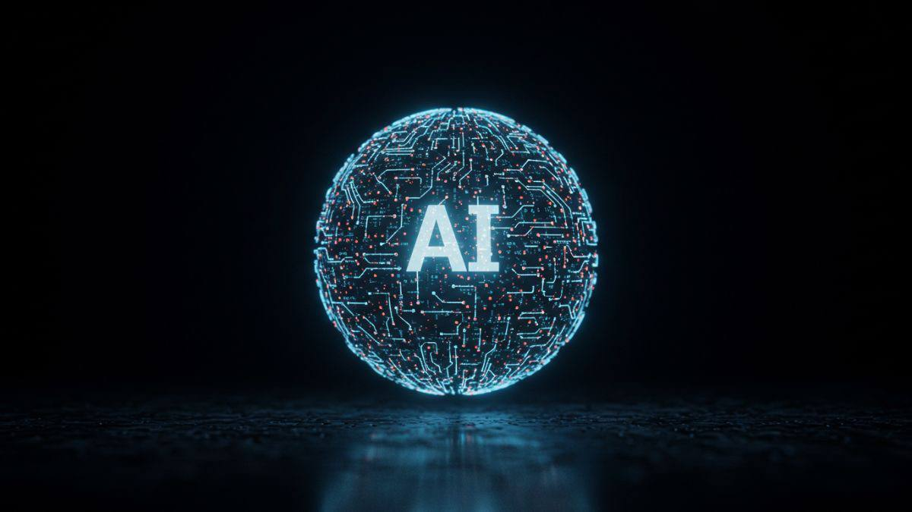

ثورة الذكاء الاصطناعي: كيف يغير العالم من حولنا؟
مقال تقني | 31 أكتوبر 2026

مقدمة
يشهد العالم تطوراً تقنياً متسارعاً، ويأتي الذكاء الاصطناعي في مقدمة هذه التطورات. فقد أصبح جزءاً مهماً من حياتنا اليومية، وأثر في طريقة عملنا وتعلمنا وتواصلنا مع العالم.
ولم يعد الذكاء الاصطناعي مجرد فكرة مستقبلية، بل أصبح تقنية نستخدمها اليوم في العديد من المجالات والخدمات.
ما هو الذكاء الاصطناعي؟
الذكاء الاصطناعي هو أحد أهم التطورات التقنية الحديثة， وهو فرع من فروع علوم الحاسب يهدف إلى تصميم وتطوير أنظمة وبرامج تستطيع محاكاة القدرات الذهنية للإنسان， مثل التفكير والتعلم والفهم والتحليل وحل المشكلات واتخاذ القرارات. ويعتمد الذكاء الاصطناعي على جمع البيانات وتحليلها والاستفادة منها للوصول إلى نتائج تساعد على تنفيذ المهام بشكل أسرع وأكثر دقة.
وقد أصبح الذكاء الاصطناعي جزءًا من حياتنا اليومية، حيث نستخدمه في العديد من الأجهزة والتطبيقات دون أن نشعر بذلك، مثل الهواتف الذكية ومحركات البحث وبرامج الترجمة والمساعدات الصوتية. كما يتميز بقدرته على التعلم من التجارب السابقة وتحسين أدائه مع مرور الوقت. ويُعد الذكاء الاصطناعي من التقنيات التي ساهمت في تغيير طريقة عمل الإنسان وتعامله مع التكنولوجيا ،وأصبح من الأدوات المهمة التي تساعد على تطوير المجتمعات وتحقيق التقدم في مختلف المجالات.
استخدامات الذكاء الاصطناعي
يدخل الذكاء الاصطناعي في مجالات مختلفة، ومن أبرزها:
- الصحة: المساعدة في تحليل الصور الطبية ودعم التشخيص.
- التعليم: توفير تجارب تعليمية تناسب احتياجات الطلاب.
- النقل: تطوير أنظمة الملاحة والسيارات ذاتية القيادة.
- الأعمال: تحليل البيانات وتحسين الإنتاجية.
أهمية الذكاء الاصطناعي
تتمثل أهمية الذكاء الاصطناعي في دوره الكبير في تسهيل حياة الإنسان وتطوير مختلف المجالات، حيث يساعد على إنجاز الأعمال والمهام في وقت قصير وبكفاءة عالية، كما يساهم في توفير الجهد وتقليل التكاليف والأخطاء التي قد تحدث أثناء العمل. ويتميز بقدرته على تحليل كميات كبيرة من المعلومات بسرعة، مما يساعد الأفراد والمؤسسات على اتخاذ قرارات أفضل بناءً على البيانات المتوفرة.
ومن أهم فوائده أنه يساهم في تحسين جودة الخدمات الصحية والتعليمية والصناعية، كما يساعد في إيجاد حلول للمشكلات الصعبة التي تحتاج إلى تحليل ودراسة دقيقة. ويساعد أيضًا على زيادة الإنتاجية وتطوير الابتكار والإبداع، من خلال توفير أدوات وتقنيات جديدة تفتح المجال أمام الإنسان لاكتشاف أفكار وحلول مختلفة.
وتظهر أهمية الذكاء الاصطناعي أيضًا في مساعدة الأشخاص ذوي الإعاقة، مثل توفير برامج تحويل الكلام إلى نصوص، وتحويل النصوص إلى صوت، وأدوات تساعد على التواصل والتعلم. لذلك أصبح الذكاء الاصطناعي عنصرًا مهمًا في تقدم المجتمعات، وأداة تساعد على بناء مستقبل أكثر تطورًا وسهولة.
الذكاء الاصطناعي ليس مجرد تقنية جديدة، بل هو وسيلة لإعادة تشكيل طريقة حياتنا وعملنا.
مستقبل الذكاء الاصطناعي
يُتوقع أن يشهد الذكاء الاصطناعي تطورًا كبيرًا في المستقبل، وأن يصبح أكثر انتشارًا وتأثيرًا في مختلف جوانب الحياة. فمع التقدم المستمر في التكنولوجيا، ستصبح الأنظمة الذكية أكثر قدرة على فهم احتياجات الإنسان والتفاعل معه وتقديم حلول تساعده في أداء أعماله اليومية بشكل أفضل.
ومن المتوقع أن يكون للذكاء الاصطناعي دور مهم في تطوير المجال الطبي من خلال المساعدة في اكتشاف الأمراض مبكرًا وتطوير الأدوية والعلاجات. كما قد يساهم في تحسين التعليم من خلال توفير تجارب تعليمية تناسب قدرات الطلاب، وفي تطوير وسائل النقل لتصبح أكثر أمانًا وكفاءة. ومن الممكن أيضًا أن يساعد في حماية البيئة من خلال مراقبة التلوث وترشيد استهلاك الطاقة.
وعلى الرغم من الفوائد الكبيرة التي يقدمها الذكاء الاصطناعي، إلا أن تطوره قد يصاحبه بعض التحديات، مثل تأثيره على بعض الوظائف ومخاطر انتهاك الخصوصية والاعتماد الزائد على التكنولوجيا. لذلك من المهم وضع قوانين وضوابط تنظم استخدامه، والحرص على تطوير مهارات الإنسان لمواكبة التغيرات المستقبلية.
الخاتمة
يمثل الذكاء الاصطناعي مرحلة مهمة في تاريخ التكنولوجيا، وتزداد أهميته مع مرور الوقت. ولذلك فإن فهم هذه التقنية وتعلم كيفية استخدامها بشكل مسؤول أصبح أمراً ضرورياً لمواكبة المستقبل.